Chapter 11 Statistical Arbitrage
Mathematical definition of a “free lunch”. In the real world, there is never 0 risk. Statistical arbitrage uses “statistical mispricing” of assets to make money. This involves long and short positions simultaneously and are typically short-term and market-neutral.
Examples:
- Pairs Trading
- Index Arbitrage
- Volatility Arbitrage
- Algorithmic and High Frequency Trading
11.1 Pairs Trading
Developed in the 80’s by Morgan Stanley quants, who made ~50 Million in profits in 1987.
The idea: Find pairs of stocks that tend to move together, and once they diverge, you expect them to come back together. If they cross some threshold of divergence, buy the low priced one and sell the higher priced one until they converge.
Problem: If the prices don’t converge.
Example of two pairs:
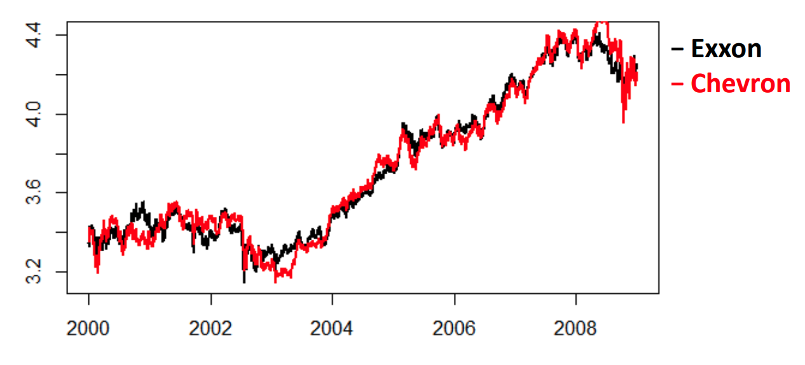
We use log asset prices because it’s easier to model with Brownian motion.
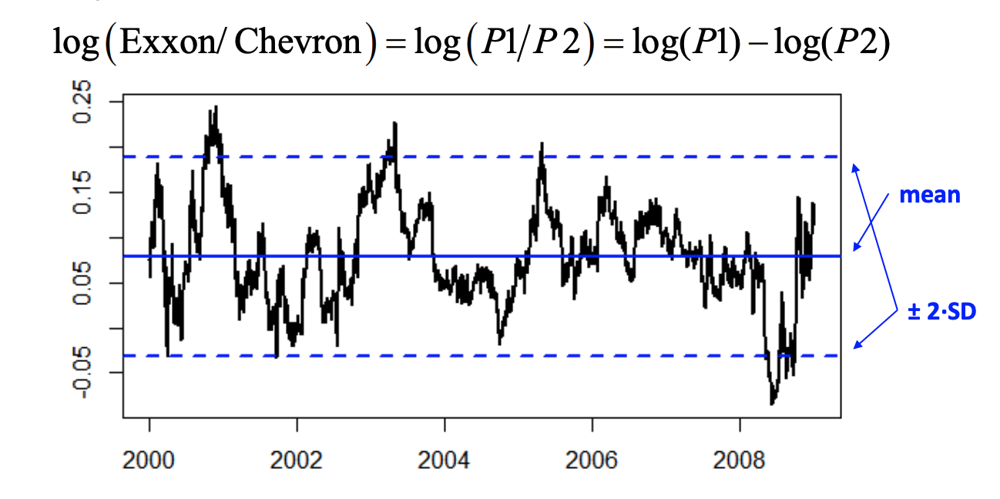
Using this chart, we can decide the threshold at which to trade the two stocks:
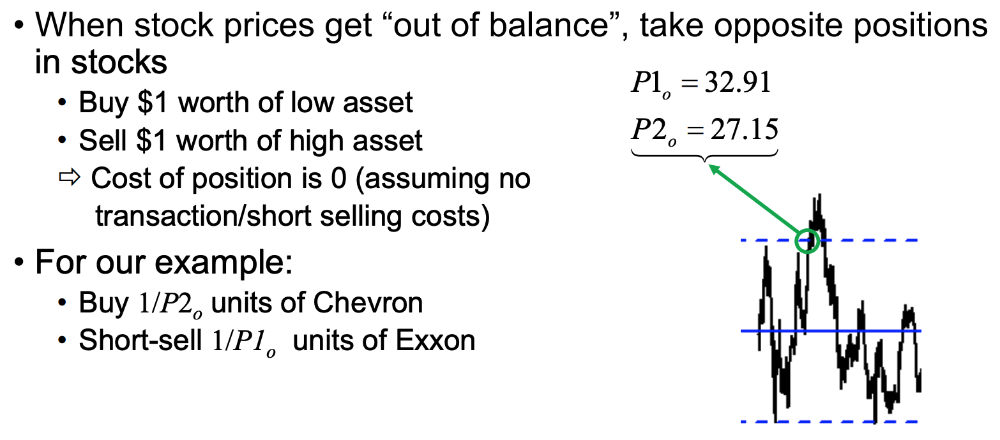
- Key: Buy and sell the same dollar amount.
- Buy \(\frac{1}{P2_{0}}\) where \(P2_{o}\) is the opening price of stock 2
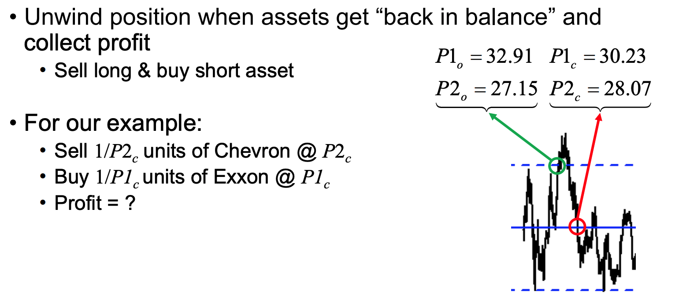
Per $1 invested, the profit will be:
\[ \frac{1}{P2_{o}}\times P2_{c}-\frac{1}{P1_{o}}\times P1_{c} = \frac{28.07}{27.15}-\frac{30.23}{32.91} = .11532 \]
The profitability is determined by the behaviour of the log asset-price ratio.
\[ \begin{gathered} \text{Profitable if: } \frac{P1_{c}}{P1_{o}} - \frac{P2_{c}}{P2_{o}} \ne 0\\ \implies \frac{P1_{c}}{P1_{o}} < \text{ or }> \frac{P2_{c}}{P2_{o}} \end{gathered} \]
which is equivalent to asking
\[ \begin{aligned} \frac{P2_{o}}{P1_{o}} &< \text{or} > \frac{P2_{c}}{P1_{c}}\\ &\iff\\ \log(\frac{P2_{o}}{P1_{o}}) &< \text{or} > \log(\frac{P2_{c}}{P1_{c}}) \end{aligned} \] >Profitability is determined by log-ratio of prices. We say \(< \text{ or } >\) just because we only care that there exists a difference, but not which one exactly is the larger of the two.
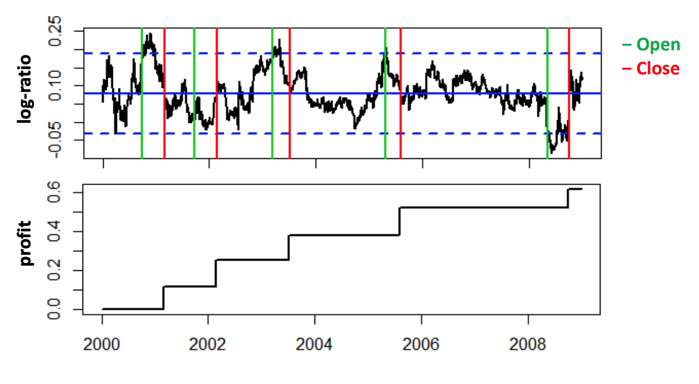
We can also show market-neutrality: \[ \begin{aligned} CAPM &\implies \begin{cases} R1 = \beta\cdot R_{M} + \epsilon_{1} \\ R2 = \beta\cdot R_{M} + \epsilon_{2} \\ \end{cases} \implies \begin{cases} \frac{P1_{c}}{P1_{o}} = 1+R1 = 1+\beta\cdot R_{M} + \epsilon_{1} \\ \frac{P2_{c}}{P2_{o}} = 1+R2 = 1+\beta\cdot R_{M} + \epsilon_{2} \\ \end{cases}\\ &\implies \frac{P1_{c}}{P1_{o}} - \frac{P2_{c}}{P1_{o}} = \frac{P2_{c}}{P2_{o}} = (1+\beta\cdot R_{M} + \epsilon_{1}) - (1+\beta\cdot R_{M} + \epsilon_{2}) = \epsilon_{1}-\epsilon_{2}\\ \end{aligned} \]
Where \(\epsilon_{1}-\epsilon_{2}\) is independent of market return \(R_{M}\).
11.1.1 What could go wrong
When the prices don’t converge, and the log ratio of prices don’t go back to the mean. (Mean-reverting)
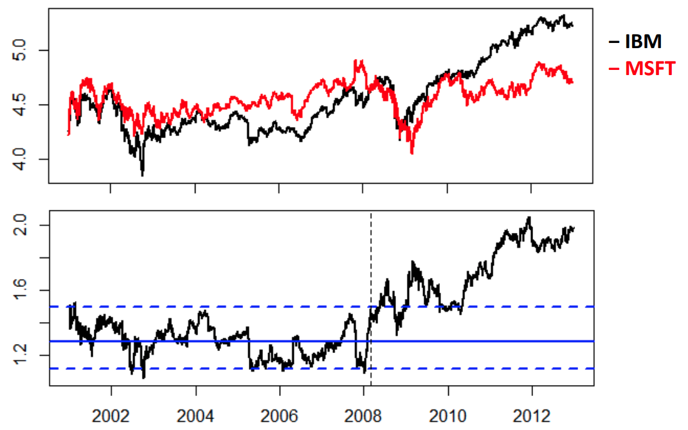
11.1.2 Other things to consider
- Determine which pairs to trade
- When to open a position (the threshold)
- What amounts to buy/sell
- When to close trade
- When to bail out of trade
Need to create a statistical/mathematical model to help make decisions on these items to consider.
11.1.2.1 1. Determining which pairs to trade
For a market with \(N\) assets, there are max \(_{n}C_{2}\) pairs that could be made which is in the order of \(n^{2}\).
We only want pairs who’s log-ratio has strong mean reversion. This is not the same as simply having a constant mean. It depends on the dynamics of log-ratio process. For example, ARMA models have mean reversion properties but random walk processes/brownian motion do not have the mean reversion property.
11.1.2.2 Example 1: Log
Let \(X_{t} = \log(\frac{P1_{t}}{P2_{t}}) \sim^{iid} N(0,\sigma^{2}), \ \forall t=1,2,\dots\)
If \(X_{0} = 2\sigma\), what’s the expected time until \(X_{T}\leq 0\)?
On any day \(t\), \(\mathbb{P}(X_{t}\leq 0) = 0.5\) by symmetry
\[ \begin{aligned} \text{Let } T &= \# \text{ days until } X_{t} \leq 0 \text{ for the first time}\\ &= \text{(hitting time)}\\ &= \# \text{ trials until 1st success } x_{t} \leq 0\\ \implies T &\sim \text{Geometric}\left( p=\frac{1}{2} \right)\\ PMF \ \ p_{T}(t) &= \left( \frac{1}{2} \right)^{t} \quad \forall t \geq 1\\ \mathbb{E}(T) &= \frac{1}{p} = 2 \end{aligned} \]
11.1.2.3 Example 2: BM
Let \(X_{t} = \log(\frac{P1_{t}}{P2_{t}}) \sim\) Brownian Motion (BM) (continuous time Random Walk) For any \(X_{0}=c > 0\), show that the expected time until \(X_{T}\leq 0\) is infinite.
\[ \begin{aligned} \text{Let } T_{c} &= \{\text{first time std BM w/} W_{0} =0 \text{ hits level c}\}\\ \text{Let }M_{t} &= \max\left\{ W_{u} ; 0 \leq u \leq t \right\} \implies M_{t} \sim |W_{t}| \end{aligned} \]
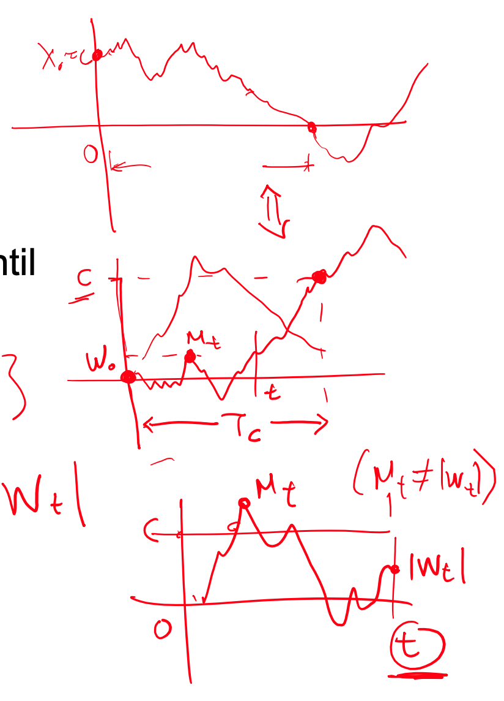
Which tells you that the distribution of the \(M_{t}\) follows the same distribution of the absolute value of the Brownian Motion.
This means: \[ \begin{aligned} \mathbb{P}(T_{c}\leq t) = \mathbb{P}(M_{t}\geq c) = \mathbb{P}(|\underbrace{ W_{t} }_{ \sim N_(0,t) }| \geq c) = 2 \cdot \Phi\left( -\frac{c}{\sqrt{ t }} \right) \end{aligned} \]
Where \(\Phi\) is the CDF of the std normal.
As we look at the two tails of the normal after standardizing, but we take the area under the lower tail (-c).
\[ \begin{aligned} \implies \text{PDF of }& T_{c} \text{ is given by } f(t)\\ f(t) &= \frac{\delta}{\delta t} \underbrace{ \mathbb{P}(T_{c}\leq t) }_{ F(t) } = \frac{\delta}{\delta t}\left[ 2\cdot \Phi\left( -\frac{c}{\sqrt{ t }} \right) \right]\\ &= 2 \frac{\phi\left( -\frac{c}{\sqrt{ t }} \right)\delta}{\delta t}\left( -\frac{c}{\sqrt{ t }} \right)\\ &= 2\phi\left( -\frac{c}{\sqrt{ t }} \right)\cdot\left( -\left( -\frac{1}{2} \frac{c}{\sqrt{ t^{3} }}\right) \right)\\ &= \frac{1}{\sqrt{ 2 \pi }}e^{-1/2 \cdot c^{2}/t}\cdot \frac{c}{\sqrt{ t^{3} }} \end{aligned} \]
So the expected value of hitting time is: \[ \begin{aligned} \mathbb{E}(T_{c}) &= \int ^{\infty}_{0} t\cdot f(t) \, dt\\ &= \int ^{\infty}_{0}t \frac{c}{\sqrt{ 2\pi t^{3} }}e^{-1/2 \cdot c^{2}/2} \, dt\\ &= \frac{c}{\sqrt{ 2\pi }} \int^{\infty}_{0} \frac{1}{\sqrt{ t }}e^{-c^{2}/2t} \, dt\\ &\geq \frac{c'}{\sqrt{ 2\pi }}\int^{\alpha}_{0} \frac{1}{\sqrt{ t }} \, dt + \int ^{\infty}_{\alpha} \frac{1}{\sqrt{ t }}e^{-c^{2}/2t} \, dt \to \infty\\ \\ \implies \mathbb{E}[T_{c}] &= \infty \end{aligned} \]
A stationary process ensures mean reversion. Thats why we use stationary processes to model the log-ratio.
11.1.3 Mean Reversion
Mean reversion suggests log-ratio process are stationary.
Stationary processes are guaranteed to converge back to their mean within a reasonable time.
- Marginal distribution has constant mean, variance, and covariance between two stationary variables only depends on the distance between times
- Auto-Correlation Function (ACF) \(\rho(h), \forall h=0,1, \ldots\) describes (linear) dependence at lag \(h=|t-s|\)
\[ \begin{aligned} \mathbb{E}[X_{t}] &= \mu \quad \forall t\\ \mathbb{V}[X_{t}] &= \sigma < \infty \quad \forall t\\ Cov(X_{t},X_{s}) &= Cov(X_{t+r},X_{s+r}) \quad \forall r,s,t \end{aligned} \]
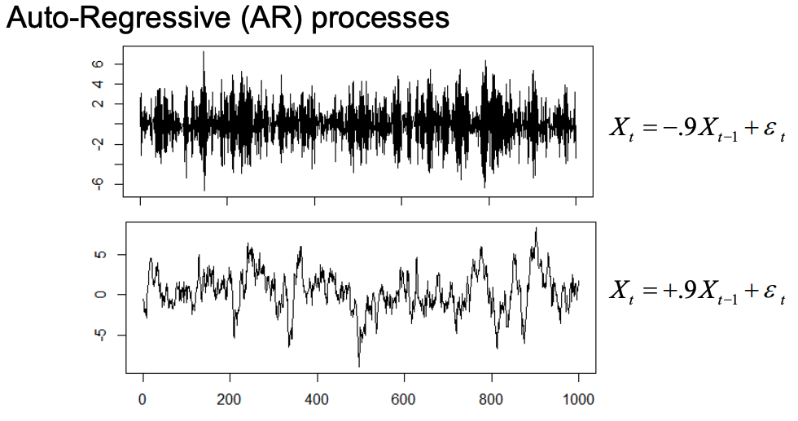
11.1.4 Integrated Series
In general, asset log-prices which are random walks, are not stationary. They are unpredictable. However, the log returns \(r_{t} = \log(\frac{S_{t}}{S_{t-1}})\) follow a stationary process, whereas the asset log-prices \(\log(S_{t}) = \log(S_{0}) + \sum^{t}_{i=1}r_i\) are random walks.
A variable that is not stationary but it’s differences are, is called an integrated series. \(\left\{ X_{t} \right\}\) is not stationary but \(\left\{ \nabla X_{t} = X_{t} - X_{t-1}\right\}\) is.
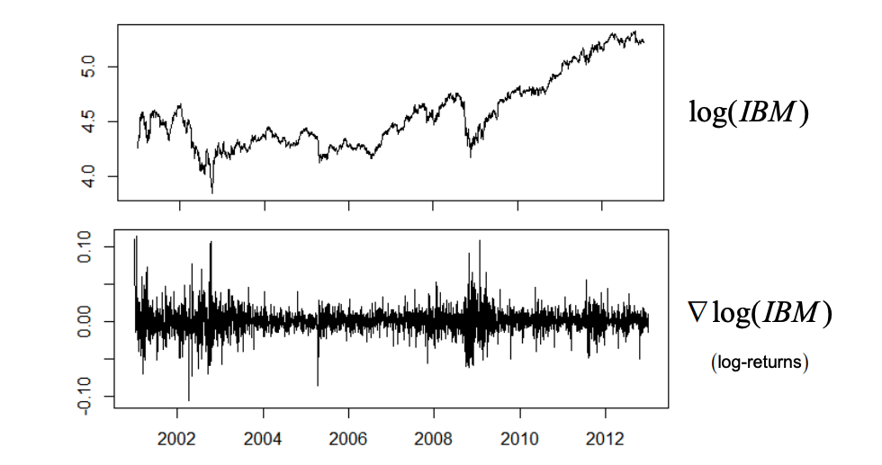
11.1.5 Cointegration
Consider two integrated series \(\left\{ X_{t}, Y_{t} \right\}\) which behave as random walks, but if they seem to have some constant (stationary) relationship when linearly combined then they are called cointegrated. \[ \exists \ \alpha\ s.t.\ X_{t} + \alpha Y_{t} \sim Stationary \]
11.1.5.1 Ex: Yield Rate
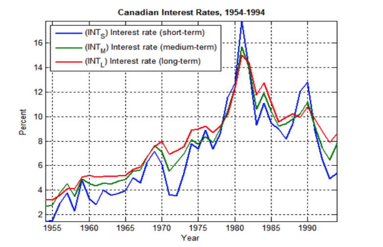
The short, medium, and long term rates are considered cointegrated as they individually follow a random walk, but they do it together.
11.1.5.2 Ex: Math
Let \(\left\{ W_{t} \right\}\) be a random walk, and \[ \begin{cases} X_{t} = W_{t} + \epsilon_{t} \\ Y_{t} = W_{t} + \nu_{t} \end{cases} \]
where \(\epsilon, \nu \sim^{iid} N(0,\sigma^{2})\)
We can show \(\left\{ X_{t},Y_{t} \right\}\) are cointegrated. (They are not stationary, but their 1st order different is stationary)
\[ \mathbb{V}(X_{t}) = \mathbb{V}[W_{t}+\epsilon_{t}] = \overbrace{ \mathbb{V}(W_{t}) }^{ t \sigma_{w}^{2} } + \overbrace{ \mathbb{V}(\epsilon_{t}) }^{ \sigma^{2} } = t\sigma_{w}^{2}+\sigma^{2} \implies \text{not stationary} \] Which is the same case for \(Y_{t}\). Looking at the first order differences:
\[ \begin{gathered} \nabla X_{t} = X_{t}-X_{t-1} = W_{t}+\epsilon_{t} -W_{t-1}+\epsilon_{t-1} = (W_{t}-W_{t-1})+\epsilon_{t}+\epsilon_{t-1}\\ \implies \mathbb{V}(\nabla X_{t}) = \sigma^{2} \text{stationary} \end{gathered} \]
To show cointegration, we much show \(X_{t}-Y_{t}\) is stationary.
\[ \begin{gathered} X_{t}-Y_{t} = (W_{t}+\epsilon_{t})-(W_{t}+\nu_{t}) = \epsilon_{t} + \nu_{t} \text{sum of iid sequences}\\ \implies \begin{cases} \mathbb{E}(X_{t}-Y_{t}) = 0 \\ \mathbb{V}(X_{t}-Y_{t}) = 2\sigma^{2} \\ Cov(X_{t}-Y_{t}, X_{t+h}-Y_{t+h}) = \rho |h| ?? \end{cases} \end{gathered} \]
For pairs trading, we want assets which are cointegrated (their log difference is stationary)
11.1.6 Stationarity
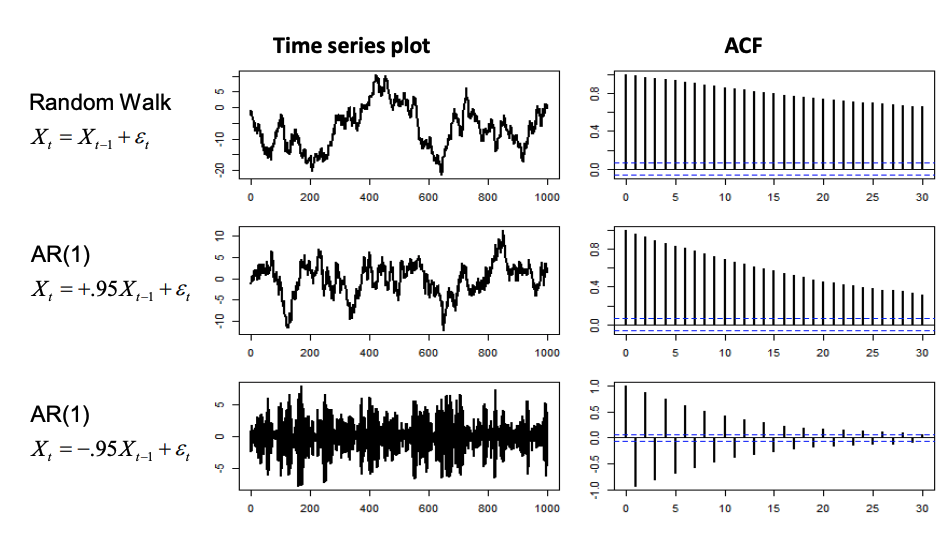
Time series is not always a good indicator of a random walk. We can use a ACF to determine it. Linear decline -> random walk
11.1.6.1 Tests
There also exists stationarity tests:
Hypothesis test for \(\left\{\begin{array}{l}H_0 \text { : series is integrated } \\ H_1 \text { : series is stationary }\end{array}\right.\) - Idea: fit \(X_t=\beta X_{t-1}+\varepsilon_t\) to data and test \(\left\{\begin{array}{l}H_0: \beta=1 \\ H_1: \beta<1\end{array}\right.\) E.g. For \(n=1000\) | Model | Test statistic | P-value | |———————————-|—————-|———————————| | \(X_t=X_{t-1}+\varepsilon_t\) | -1.9027 | 0.6195 | | \(X_t=+.95 X_{t-1}+\varepsilon_t\) | -5.6161 | \(<<.01\) | | \(X_t=-.95 X_{t-1}+\varepsilon_t\) | -232.4851 | \(<.01\) |
But if we’re trying to check if a linear combination of assets is stationary, its difficult because we don’t know the linear combination to look for. There are two tests for cointegration:
- Engle-Granger two-step method: Run linear regression and look for potential cointegrated relationship, finding the combination that minimizes squared errors. Then the errors are tested for stationarity (converge to 0)
- Vector Error Correction models (VECM): Covered in time series, a part of VAR models
11.1.6.2 Two step method example
First we fit a linear regression to obtain the slope (not useful), and the intercept (need to subtract from errors).
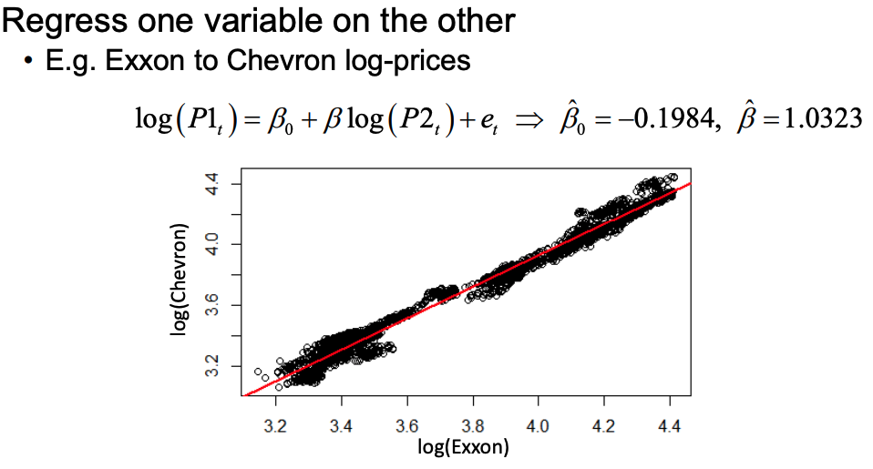
Now we can look at the errors (minus the intercept so its 0 centered) and run stationarity tests on them. We would trade stocks with the highest metrics, although this method is not optimal since our results could be arbitrary.
If we did the regression swapping the variables, the p-value could differ a lot
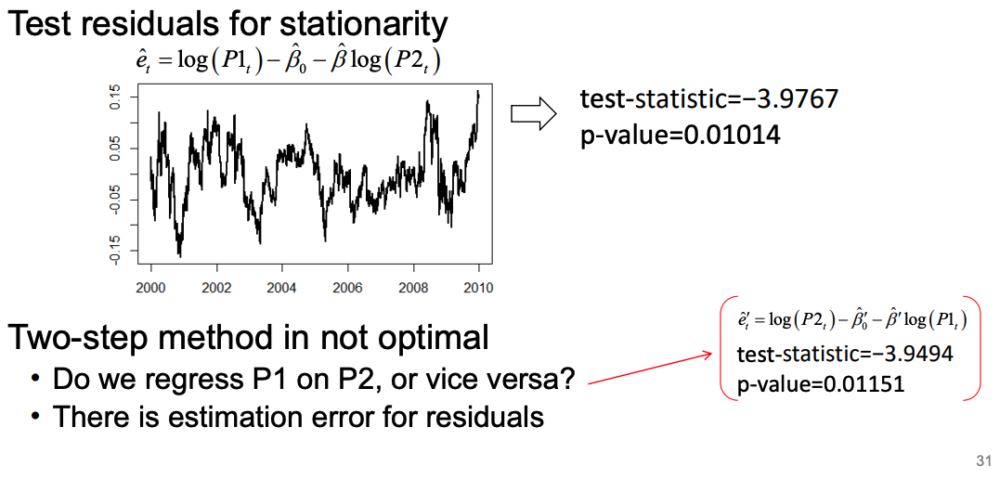
11.1.7 Spurious regression
Two totally independent stocks may show some false linear relationship.
Consider 2 independent random walks \(\left\{W_t, V_t\right\}\) - When you regress \(W_t=\beta_0+\beta V_t+e_t, t=1, \ldots, n\) you are NOT guaranteed that \(\hat{\beta} \rightarrow 0\) as the sample size \(n \rightarrow \infty\) (i.e. not consistent)!!! Effect called spurious (fake) regression - Results of random walk (integrated series) regressions are NOT reliable - To address this problem & estimation errors, use Phillips-Ouliaris stationarity test in 2 step method
Bottom line is using VAR models is superior than the two step test/using linear regression. A multivariate time series model is best.
11.2 Financial Indices
Indices measure value/performance of financial markets. E.g., - Dow-Jones Industrial Average (DJIA): Simple average of 30 major US stock prices (since 1896) - Standard & Poor (S&P) 500: Weighted (cap-base) average of 500 large NYSE & NASDAQ listed companies Financial indices are NOT traded instruments However, there are many financial products whose value is directly related to indices: - Mutual funds: e.g., Vanguard 500 Index Fund - Exchange-Traded-Funds (ETF’s): e.g., SPDR or iShares S&P500 Index - Futures: e.g., E-Mini S&P futures
11.3 Index Arbitrage
- Financial products based on indices essentially offer a sophisticated version of multivariate cointegration
- Index of #N assets \(\left\{S_i\right\}_{i=1}^N\) w/ weights \(\left\{w_i\right\}_{i=1}^N\) \(\Rightarrow\) Index level: \(I(t)=\sum_{i=1}^N w_i \times S_i(t)\)
- Instrument tracking index \(F(t)\) (e.g. futures)
- Known cointegration relationship: \[ F(t)-I(t)=F(t)-\sum_{i=1}^N w_i \times S_i(t) \sim \text { stationary } \]
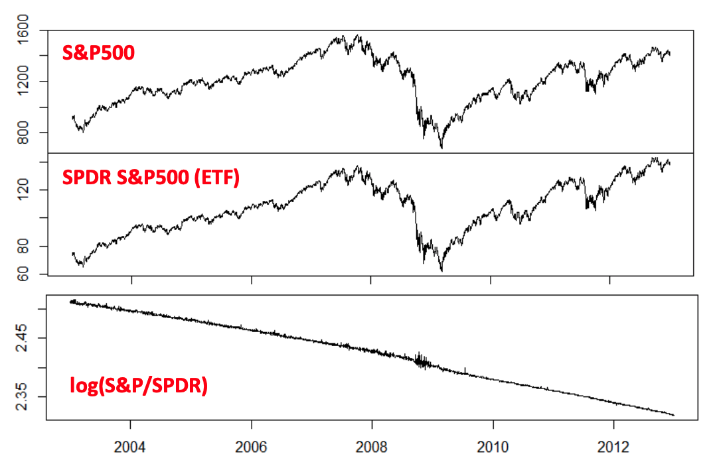
11.4 Volatility Arbitrage
- VolArb is implemented with derivatives, primarily options
To fix ideas, consider European options: - For Black-Scholes formula, only unobserved input is volatility \(\sigma\), which has to be estimated - How does volatility affect Call/Put prices? - Implied volatility \(\sigma_i\) is input which makes Black-Scholes price equal to observed market price - \(\sigma_i\) is not estimated from underlying asset dynamics - Imagine you know volatility will increase in the future, beyond what current options prices warrant (implied vol σi ). - How can you take advantage of this? - Eliminate effects of asset movement by delta-neutral strategy - Profit by large moves, irrespective of direction
- VolArb relies on predicting (implied) volatility of underlying asset
- Common approach is to describe the evolution of volatility with GARCH (Generalized AutoRegressive Conditional Heteroskedasticity) models \[ \begin{gathered} y_t=\sigma_t \cdot \varepsilon_t, \varepsilon_t \sim^{i i d} N(0,1) \\ \sigma_t^2=\alpha_0+\sum_{j=1}^p \alpha_j y_{t-j}^2+\sum_{k=1}^q \beta_k \sigma_{t-k}^2 \end{gathered} \]
- Essentially, an autoregressive model for conditional variance
11.5 High Frequency Trading
- HFT uses algorithmic trading over very short holding periods, profiting from very small price discrepancies by trading frequently and at large volumes
- HFT employs predictive algorithms for machine learning and data mining
- Essentially, tries to discover patterns of trading activity & profit by preempting them
- This includes traditional method like index arbitrage, but also others which might not have any intuitive interpretation